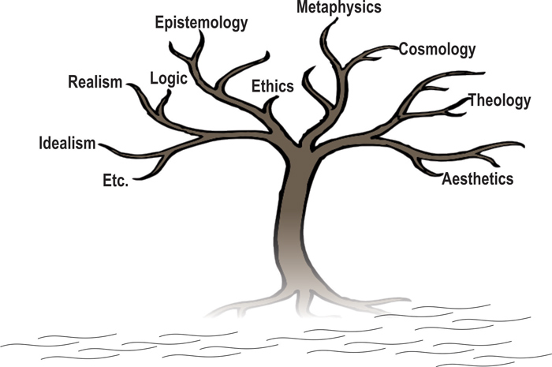
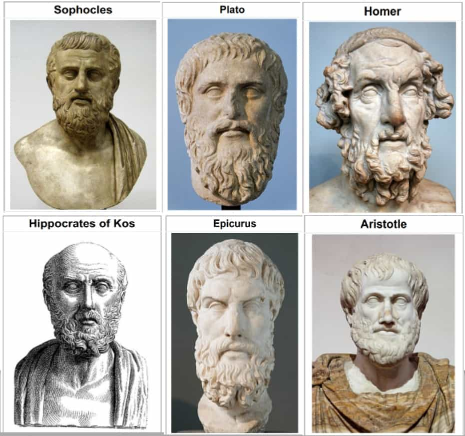

What is Philosophy?
Philosophy is the study of the fundamental nature of knowledge, reality and existence, especially when considered as an academic discipline.
The Different Branches of philosophy
- Metaphysics is the branch of philosophy that deals with the first principles of things, including abstract concepts such as being, knowing, identity, time and space.
- Axiology is the philosophical study of value, it poses questions about nature and the classification of values.
- Epistemology is the theory of knowledge, with regard to its scope, methods, validity and the distinction between justified belief and opinion.
- Ethics is the study of moarlity, determining what is right and wrong, and how we ought to act.
- Aesthetics is concerned with the nature of beauty, taste and art.
- Logic philsophy is the study of valid argumentation and reasoning.
- Political Philosophy examines questions about governance, rights, justice and the ideal organization of society.
- For a more in detail discussion of these topics visit leverageedu
Noteworthy thinkers
- Socrates is know for his method of questioning the Socratic method of questioning.
- Plato is the founder of the Academy in Athens.
- Aristotle is a student of Plato and was the tutor to Alexander the Great.
- Friedrich Nietzsche is know for his criticism of conventional European morality.
- If you want a more in detail and quantity of greek philosophers visit BestedLessons here
Important/notworthy questions
- What is the meaning of life?
- Is there a difference between right and wrong?
- Can we know anything for certain?
- What is the nature of reality?
- Do we have free will?
More information
This is just a basic round down of some basic knowledge surrounding philosophy but if you would like to know more visit some of these websites that might be helpful.These websites can be found below